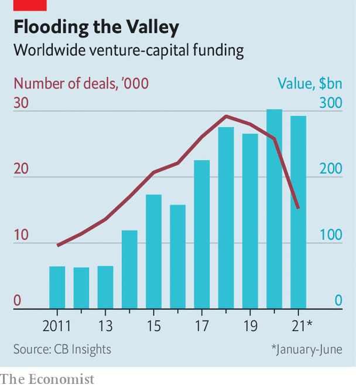

2021-09-14T15:46:22+00:00
The Oracle of AI
AI界的甲骨文
AI界的甲骨文
Flush with billions, Databricks has momentum and big plans
被砸数十亿，Databricks来势汹汹，蓝图宏伟
被砸數十億，Databricks來勢洶洶，藍圖宏偉
Silicon’s Valley’s latest darling is on the move
硅谷最新的宠儿在行动
硅谷最新的寵兒在行動
“HI, JUST CHECKING in. Can I put in some more?” The bosses of promising startups are bombarded by such texts these days. Big funds in particular are falling over themselves to grab a piece of the tech pie (see chart). Yet one founder seems to have received more than his fair share of pitches: Ali Ghodsi, the chief executive of Databricks. And he has said yes to many. On August 31st the company confirmed that, only six months after a $1bn financing deal, it had raised another $1.6bn, valuing it at $38bn—$10bn more than after the previous round. Among the Silicon Valley cognoscenti, these numbers cement Databricks’ status as the most hyped company of the hour.
“你好，我就是想问问，还能再加点吗？” 这些日子，那些前景可观的创业公司的老板们都在被这样的短信轰炸。尤其是大型基金，它们竭力要从科技蛋糕中分上一块（见图表）。不过有位创始人似乎特别受青睐：Databricks的首席执行官阿里·戈德西（Ali Ghodsi）。而且他对很多人都说了“行”。8月31日，这家公司证实，在上一次融资10亿美元仅六个月后，它又融资16亿，估值已达380亿美元，比上一轮融资提高了100亿。在硅谷行家们看来，这些数字进一步确立了Databricks成为眼下最受追捧的公司。
“你好，我就是想問問，還能再加點嗎？” 這些日子，那些前景可觀的創業公司的老闆們都在被這樣的短信轟炸。尤其是大型基金，它們竭力要從科技蛋糕中分上一塊（見圖表）。不過有位創始人似乎特別受青睞：Databricks的首席執行官阿里·戈德西（Ali Ghodsi）。而且他對很多人都說了“行”。8月31日，這家公司證實，在上一次融資10億美元僅六個月後，它又融資16億，估值已達380億美元，比上一輪融資提高了100億。在硅谷行家們看來，這些數字進一步確立了Databricks成為眼下最受追捧的公司。
The software-maker is soon likely to be known farther afield. Later this year it is expected to stage the largest-ever initial public offering (IPO) of a software firm—larger than that in late 2020 of Snowflake, its most serious rival. Alternatively, some predict, it could be snapped up by Microsoft in the largest ever software takeover. Whatever the outcome, there is substance to the hype. Databricks could become, in the age of artificial intelligence (AI), what Oracle and its databases once were in the world of conventional corporate software: the dominant platform on top of which applications are built and run.
这家软件公司应该很快就会变得更广为人知。预计今年晚些时候，它将上演软件行业有史以来规模最大的IPO，规模超过它最强劲的竞争对手雪花（Snowflake）在2020年底的IPO。一些人预测，如果不上市，它可能会被微软收购，成为有史以来最大的软件收购案。不管结果如何，围绕它的喧嚣事出有因。在人工智能（AI）时代，Databricks或许能达到甲骨文及其数据库过去在传统企业软件世界里的地位：成为支持构建和运行应用程序的主导平台。
這家軟件公司應該很快就會變得更廣為人知。預計今年晚些時候，它將上演軟件行業有史以來規模最大的IPO，規模超過它最強勁的競爭對手雪花（Snowflake）在2020年底的IPO。一些人預測，如果不上市，它可能會被微軟收購，成為有史以來最大的軟件收購案。不管結果如何，圍繞它的喧囂事出有因。在人工智能（AI）時代，Databricks或許能達到甲骨文及其數據庫過去在傳統企業軟件世界裡的地位：成為支持構建和運行應用程序的主導平台。
Databricks was founded in 2013 to commercialise Spark, a piece of open-source software that processes reams of data from different sources to train algorithms which then become the engines of AI applications. The firm added features, including code that makes it easier for developers to program the system as well as manage their workflow, and offered the package as a cloud-based subscription service.
Databricks在2013年创立以将开源软件Spark商业化。Spark处理不同来源的大量数据来训练算法，这些算法而后成为AI应用的引擎。该公司增加了一些功能，包括代码，让开发人员更易于编程和管理自己的工作流，并且通过云端订阅服务提供这些功能包。
Databricks在2013年創立以將開源軟件Spark商業化。Spark處理不同來源的大量數據來訓練算法，這些算法而後成為AI應用的引擎。該公司增加了一些功能，包括代碼，讓開發人員更易於編程和管理自己的工作流，並且通過雲端訂閱服務提供這些功能包。
Yet Databricks only really took off when it added another component called “lakehouse”. It is a combination of two sorts of databases, a “data warehouse” and a “data lake” (hence the portmanteau). Both have historically been separate because of technical constraints and because they serve different purposes. Data warehouses are filled with well-defined corporate data that allow a firm to look into its past, for instance at how its sales have evolved, something called “business intelligence” (BI). Data lakes are essentially a dumping ground for all sorts of data that can reveal a firm’s future, including whether sales are likely to go up or down. Yet this separation is increasingly inefficient and unnecessary, explains Max Schireson of Battery Ventures, an investor in Databricks. “Doing BI and AI in different systems today is kind of stupid,” he notes.
不过Databricks真正开始腾飞是在添加了另一个名为“湖仓一体”（lakehouse）的组件之后。这是“数据仓库”和“数据湖”这两种数据库相结合的产物（所以才有了这个合成词）。过去由于技术上的限制，也因为各自服务于不同的目的，这二者一直是分开的。数据仓库里存储着定义明确的公司数据，让公司能了解自己的过去，比如公司销售的变化，这被称为“商业智能”（BI）。数据湖本质上是堆积各种数据的垃圾场，这些数据可以透露公司的未来，包括销售可能上升还是下降。但把这两者分隔开来日益低效，也没必要，Databricks的投资者之一Battery Ventures的马克斯·希雷森（Max Schireson）解释说。“现在还在不同的系统中使用BI和AI有点蠢。”他说。
不過Databricks真正開始騰飛是在添加了另一個名為“湖倉一體”（lakehouse）的組件之後。這是“數據倉庫”和“數據湖”這兩種數據庫相結合的產物（所以才有了這個合成詞）。過去由於技術上的限制，也因為各自服務於不同的目的，這二者一直是分開的。數據倉庫里存儲着定義明確的公司數據，讓公司能了解自己的過去，比如公司銷售的變化，這被稱為“商業智能”（BI）。數據湖本質上是堆積各種數據的垃圾場，這些數據可以透露公司的未來，包括銷售可能上升還是下降。但把這兩者分隔開來日益低效，也沒必要，Databricks的投資者之一Battery Ventures的馬克斯·希雷森（Max Schireson）解釋說。“現在還在不同的系統中使用BI和AI有點蠢。”他說。
Firms have jumped on what Databricks offers, in particular incumbents worried about being disrupted by an AI-driven startup. Comcast, an American broadband provider, uses it to allow its customers to use their voice to select movies; ABN Amro, a Dutch bank, to recommend services; and H&M, a fashion retailer, to optimise its supply chain. Databricks now claims more than 5,000 customers and annualised subscription revenue of $600m—75% growth year-on-year.
企业已经开始转用Databricks的服务，尤其是那些担心被AI驱动的创业公司颠覆的传统企业。美国宽带提供商康卡斯特（Comcast）用它来提供语音选播电影功能；荷兰银行（ABN Amro）用它推荐服务；时尚零售商H&M用它优化供应链。Databricks称它目前有5000多家客户，年订阅收入6亿美元，同比增长75%。
企業已經開始轉用Databricks的服務，尤其是那些擔心被AI驅動的創業公司顛覆的傳統企業。美國寬帶提供商康卡斯特（Comcast）用它來提供語音選播電影功能；荷蘭銀行（ABN Amro）用它推薦服務；時尚零售商H&M用它優化供應鏈。Databricks稱它目前有5000多家客戶，年訂閱收入6億美元，同比增長75%。
Throwing Databricks at Snowflake
用砖头砸雪花
用磚頭砸雪花
Mr Ghodsi has set his sights even higher. “Ultimately, everything data should be on Databricks,” he says. He is planning on investing the newly raised capital to keep growing and become the leader in lakehouse systems. Nobody should fault Mr Ghodsi, who once taught computer science at the University of California, Berkeley, for his ambitions. Yet realising them will not be easy. Other firms are already pushing into the territory. He will probably be able to fend off the three big cloud-computing providers: Amazon Web Services, Google Cloud Platform and Microsoft Azure. Although they have more than enough resources to compete and provide integrated AI packages, they share one big problem. Firms increasingly prefer not to store all their data in a single cloud, fearing they will get stuck with one vendor. Instead, they opt for products, such as Databricks’, that run across several clouds.
戈德西的目标更远大。“最终，所有东西的数据都要放到Databricks上。”他说。他正计划把新融到的资金用于让公司保持增长并成为湖仓一体系统的领导者。戈德西曾在加州大学伯克利分校教授计算机科学，对于他的这种雄心壮志不应横加指摘。但要实现这些目标并不容易。其他公司已经在向这一领域进发。他或许能击退三大云计算提供商：亚马逊AWS、谷歌云平台和微软Azure。尽管它们有足够的资源竞争并提供集成的AI服务，但它们都有同一个大问题。企业越来越不愿意将所有数据都存储在同一个云里，担心会被单个供应商困住。相反，它们倾向于选择像Databricks这样的产品，可以在多个云上运行。
戈德西的目標更遠大。“最終，所有東西的數據都要放到Databricks上。”他說。他正計劃把新融到的資金用於讓公司保持增長並成為湖倉一體系統的領導者。戈德西曾在加州大學伯克利分校教授計算機科學，對於他的這種雄心壯志不應橫加指摘。但要實現這些目標並不容易。其他公司已經在向這一領域進發。他或許能擊退三大雲計算提供商：亞馬遜AWS、谷歌雲平台和微軟Azure。儘管它們有足夠的資源競爭並提供集成的AI服務，但它們都有同一個大問題。企業越來越不願意將所有數據都存儲在同一個雲里，擔心會被單個供應商困住。相反，它們傾向於選擇像Databricks這樣的產品，可以在多個雲上運行。
Snowflake is a different story. It, too, is building lakehouses. It is also taking a different approach. Whereas Databricks is adding BI to its AI platform, Snowflake, which has grown up in the data-warehouse world, is adding AI to its cloud-based BI package, meaning that their respective products will increasingly overlap. Whereas most of Databricks’ code is open-source, Snowflake’s is proprietary. And whereas Databricks has mostly stuck to a “land-and-expand” strategy, whereby small software deals grow into bigger ones, Snowflake practises a more conventional top-down sales model that focuses on big deals from the start.
雪花则是另一回事。它也在建造湖仓一体。它采取了一种不同的方式。Databricks是将BI添加到它的AI平台上，而做数据仓库出身的雪花则将AI添加到其基于云的BI包中。这意味着它们各自的产品将越来越多地重叠。Databricks的大部分代码都是开源的，而雪花的代码是专有的。Databricks基本上坚持“步步为营”的策略，把小型软件交易发展为大交易，而雪花则采用更传统的自上而下的销售模式，从一开始就专注大交易。
雪花則是另一回事。它也在建造湖倉一體。它採取了一種不同的方式。Databricks是將BI添加到它的AI平台上，而做數據倉庫出身的雪花則將AI添加到其基於雲的BI包中。這意味着它們各自的產品將越來越多地重疊。Databricks的大部分代碼都是開源的，而雪花的代碼是專有的。Databricks基本上堅持“步步為營”的策略，把小型軟件交易發展為大交易，而雪花則採用更傳統的自上而下的銷售模式，從一開始就專註大交易。
All this will make for a battle over the next few years. But it could be rudely interrupted if Microsoft snaps up Databricks. The software firm is already one of Databricks’ investors and co-operates closely with it. Among other things, Azure offers a version of Databricks’ platform and Microsoft uses its name in presentations about its strategy, something it rarely does with other firms. It would be a good fit. At its core, Microsoft is still a company selling tools for developers to write applications and platforms to run them on. And Databricks represents both a complement and a strategic threat: it lets data, rather than people, write the code.
所有这些都将在未来几年引发一场战争。但如果微软收购了Databricks，这一进程可能会被粗暴地打断。微软已经是Databricks的投资者之一，并与之密切合作。比如，Azure提供了一个Databricks平台的版本，微软在介绍其战略时提到了Databricks的名字，而这在它和其他公司的合作中极少见。二者可以说相得益彰。从本质上讲，微软仍然是这样一家公司：销售供开发人员编写应用的工具和运行这些应用的平台。Databricks既是一种补充，也是一种战略威胁：它让数据而不是人来写代码。
所有這些都將在未來幾年引發一場戰爭。但如果微軟收購了Databricks，這一進程可能會被粗暴地打斷。微軟已經是Databricks的投資者之一，並與之密切合作。比如，Azure提供了一個Databricks平台的版本，微軟在介紹其戰略時提到了Databricks的名字，而這在它和其他公司的合作中極少見。二者可以說相得益彰。從本質上講，微軟仍然是這樣一家公司：銷售供開發人員編寫應用的工具和運行這些應用的平台。Databricks既是一種補充，也是一種戰略威脅：它讓數據而不是人來寫代碼。
Databricks’ IPO is not meant to take the firm public, according to some analysts, but to put a price on it, so that negotiations can start somewhere. But the hype surrounding the company could thwart such plans. Snowflake is now worth about $90bn. If Databricks’ IPO outdoes Snowflake’s, its asking price may well be north of $100bn. And like Pinterest, a social-media firm which Microsoft considered buying earlier this year, it may become too pricey even for a company as loaded as world’s biggest software firm. ■
一些分析师认为，Databricks的IPO不是为了让公司上市，而是为了给公司标价，方便确定谈判起价。但对这家公司的追捧可能会阻碍这样的计划。雪花现在市值约900亿美元。如果Databricks的IPO超过雪花，它的要价很可能大大超过1000亿美元。就和微软今年早些时候曾考虑收购的社交媒体公司Pinterest一样，即便是对于世界上最大的软件公司这样富有的买家来说，它的价格也可能会变得过于昂贵。
一些分析師認為，Databricks的IPO不是為了讓公司上市，而是為了給公司標價，方便確定談判起價。但對這家公司的追捧可能會阻礙這樣的計劃。雪花現在市值約900億美元。如果Databricks的IPO超過雪花，它的要價很可能大大超過1000億美元。就和微軟今年早些時候曾考慮收購的社交媒體公司Pinterest一樣，即便是對於世界上最大的軟件公司這樣富有的買家來說，它的價格也可能會變得過於昂貴。